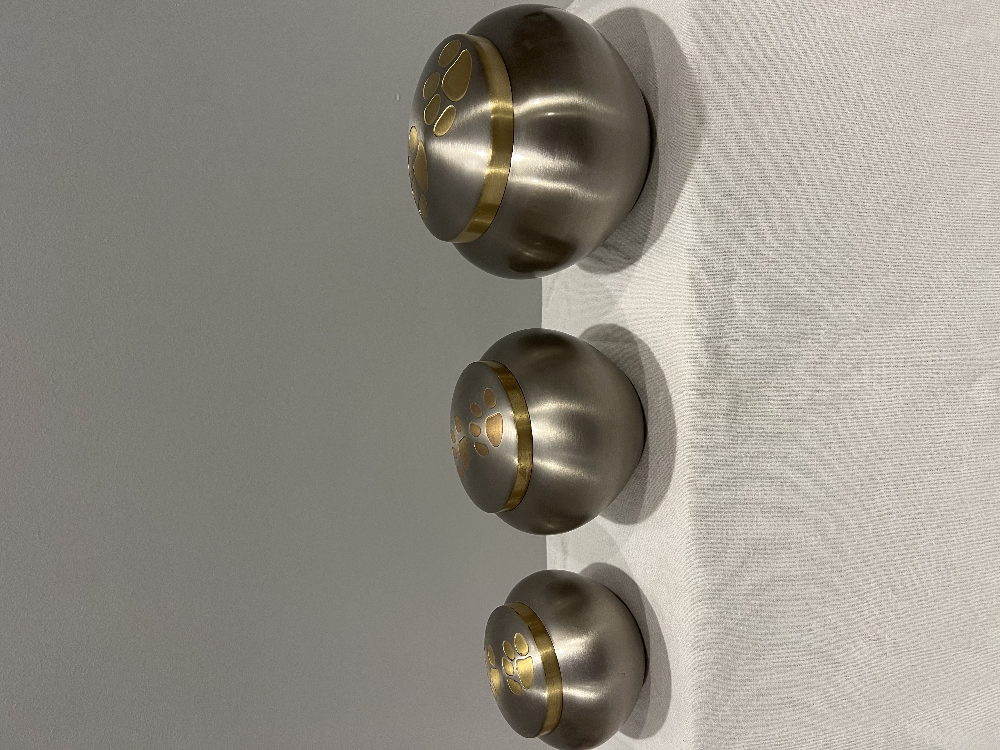
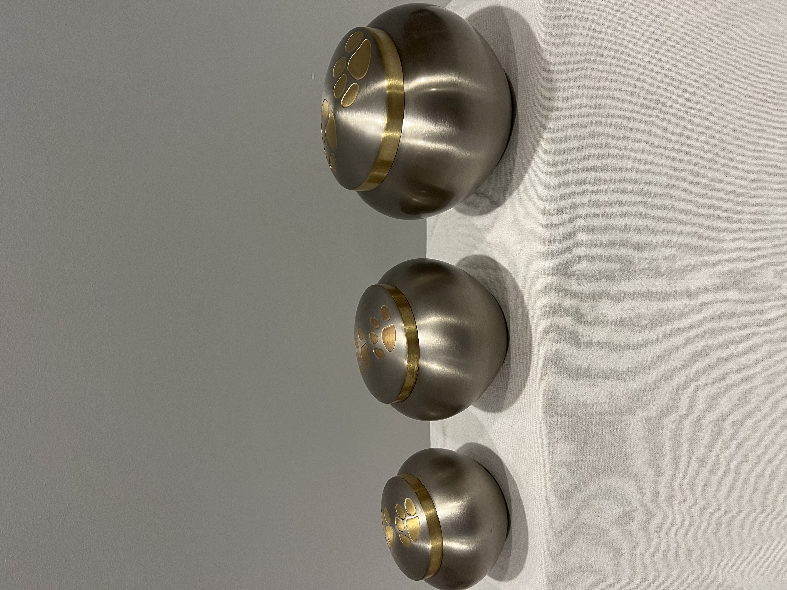

Urn Gallery
 

Copper PawPrint Round Urn
Silver PawPrint Round Urn
Sizes: S-M-L
Sizes: S-M-L
Only the lids can be engraved
Only the lids can be engraved
Blue Odyssey Round Urn
White Odyssey Round Urn
Sizes: S-M-L
Sizes: S-M-L
Trim and Paw Prints are Silver Only
Plaque and Chain Engraving Only
Trim and Paw Prints are Silver Only
Plaque and Chain Engraving Only
Camo Odyssey Round Urn
Pink Odyssey Round Urn
Sizes: S-M-L
Sizes: S-M-L
Trim and Paw Prints are Silver Only
Plaque and Chain Engraving Only
Trim and Paw Prints are Silver Only
Plaque and Chain Engraving Only
Red Classic Pet Urn
Purple Classic Pet Urn
Sizes: S-M-L-(XL-Special Order)
Sizes: S-M-L-(XL-Special Order)
Plaque and Chain Engraving Available Only
Plaque and Chain Engraving Available Only
Classic Paw Print Urns
Token Pet Urns
Sizes: S-M-L-XL
Sizes: S
Engraving Available Directly on Urn!
The only Paw Print Urns currently not available are the Copper Paw Print Heart Urns!
All other copper urns are available!
Token remembrance cremation urns are miniature urns that are designed to hold only a
small portion of ashes, or cremated
remains.
These are the very smallest of urns, which make it possible for family members or friends to divide up the
cremated remains so that each person can have an urn.
One Paw Print Heart Urn
Elite Cat Resin Urn
Sizes: S
Sizes: M
Colours: Silver-Slate-Gold-Copper
The only Paw Print Urns currently not available are the Copper Paw Print Heart Urns!
All other copper urns are available!
Limited Engraving Available due to small size of urn!
Colours: Black-Fawn-Tabby-Sable
Plaque and Chain Engraving Only Available
Cozy Cat Resin Urn
Silhouette Cat Brass Urn
Sizes: M
Sizes: S
Colours: Black-Fawn-Sable-Tabby
Plaque and Chain Engraving Only Available
Colours: Gray-Shale, Green-Fern, Blue-Country, Red-Sienna
Engraving can be done directly on the standing cat only.
Please remember it is s a very small area so limited engraving.
MDF Urns
MDF Urns with Picture Frames
Sizes: XS-S-M-L
Sizes: XS-S-M-L
Available in; cherry, natural and bamboo colours
Available in; black, cherry and natural colours
Standard Mother of Pearl Urn with Engraving
Standard Granite Stone Urns
Sizes: S-M-L-XL
Sizes: S-M-L-XL
Colours: Black-Black Pearl-White-White Pearl
Engraving is only available in one type of font
Colours: Sand-Slate-Southwest Sand-Serpentine
These are Ceramic Urns with a textured finish.
Engraving cannot be done on Granite Urns,
But a chain and plaque can be Engraved and placed around the lid.
Biodegradable Urns
Deep Blue Classic Pet Urns
Sizes: S-L
Sizes: Limited stock in sizes M-L
These have been discontinued!
Plaque and Chain Engraving Only Available